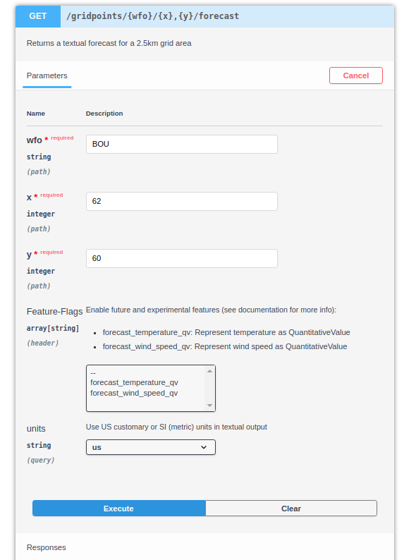

API Demonstration¶
An API, or application program interface, allows systems to interact with each other. A Developer often creates an API to serve as a set of tools that allows other applications to interact with their applications. Using the API, a developer can make a request to this API and receive a response. The response will include a certain set of data in a standardized format.
This allows many programming languages to get or manipulate data. What happens is defined by the API method. Methods are typically verbs such as POST, PUT, PATCH, or GET. Each request includes at least a method and endpoint.
As an example, I’ll make a request to RESTful national weather service (weather.gov) API using curl.
This call uses curl to execute the GET method and the /gridpoints/BOU/62,60/forecast endpoint to get forecast for tonight in Glendale, CO.
>>> curl -X GET "https://api.weather.gov/gridpoints/BOU/62,60/forecast" | grep -A 9 '"number": 1,'
% Total % Received % Xferd Average Speed Time Time Time Current
Dload Upload Total Spent Left Speed
0 0 0 0 0 0 0 0 --:--:-- --:--:-- --:--:-- 0 "number": 1,
"name": "Tonight",
"startTime": "2021-01-14T21:00:00-07:00",
"endTime": "2021-01-15T06:00:00-07:00",
"isDaytime": false,
"temperature": 19,
"temperatureUnit": "F",
"temperatureTrend": "rising",
"windSpeed": "10 mph",
"windDirection": "NW",
100 11300 100 11300 0 0 112k 0 --:--:-- --:--:-- --:--:-- 112k
In the above example:
curl -Xinvokes theGETmethod on the https://api.weather.gov resource.This is a request to the National Weather Service API for information.
The endpoint is
/gridpoints/BOU/62,60/forecastThe
BOUand62,60are used to set the location for the forecastFormat:
/gridpoints/{wfo}/{x},{y}/
The response is returned in JSON format.
To keep the sample response manageable, I used grep to limit it to tonight’s forecast.
API Documentation¶
API documentation generally consists of the following sections.
Getting started guide
Authentication set up instructions
General usage instructions
Includes sample code
Resource, method, and endpoint references
Error code definitions
SDK instructions
Publishing¶
This documentation is delivered in many ways. The following are two of the more popular methods in use.
Static Site Generators¶
APIs are often documented on statically generated websites. These are websites that are made using static site generators such as Hugo or Jekyll. I used one called Sphinx to generate this website.
Using a static site generator, like this one, is convenient for both developers and technical writers. Developers can easily include existing code blocks and updates them automatically. The technical writer’s work is now in step with the development cycle. They can edit and creates documents alongside code in a git repository. This is also known as a docs-as-code workflow.
API Documentation Tools¶
Currently, APIs are commonly documented using API tools such as Swagger and Postman. These tools make use of the Open API Standard to generate API documentation automatically. This makes the work of documentation even easier. The developer is no longer required to manually create examples in separate documentation. The technical writer becomes more of an editor and can focus their efforts more selectively. Tools like this also have the advantage of being interactive. They can allow the developer to test the API in the documentation. A tool like this was also provided by weather.gov. The previous example could have been done entirely from the website.
